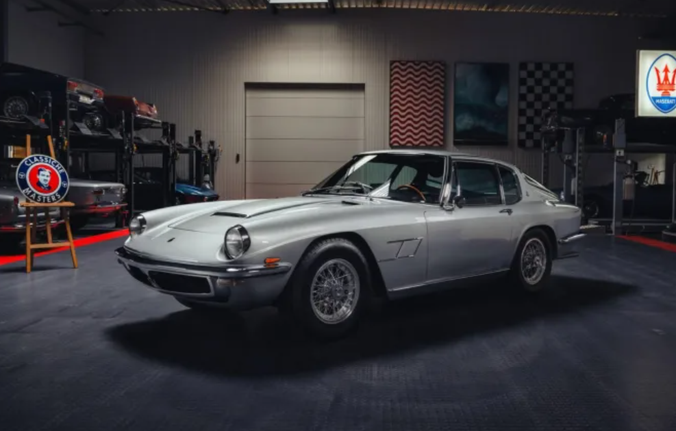

You can call it rare and attractive, but with enough change, you could also call it yours.
Gabriel Ionica . Jan 16, 2025
Modern Maseratis may have a reputation for depreciation and mechanical gremlins, but their design language is arguably still attractive. If you're looking for a break from the modern Italian sports cars, though, this callback to Maserati's golden era is exactly what you need.
A rare Italian steed from a bygone era
This is a 1967 Maserati Mistral, a svelte coupe with sexy angles, and only 454 examples produced between 1965 and 1969. Chassis 1104 here was originally ordered by its California-based owner through Agence Maserati of Saint-Cloud, France, and was delivered on April 12, 1967.
Sometime in 2015, it back its way back to Europe and was purchased by the current owner on Bring a Trailer in December 2016. Mistral Classics of Ypres, Belgium, embarked on a frame-off restoration that was completed in 2022 and included a repaint in the factory Argento Auteuil color, replating of the chrome accents, and new black leather upholstery. The engine was rebuilt prior to the restoration in 2015.

This Mistral was then sent to Maserati in Modena, Italy, in 2023, where it received an official Maserati Classiche Certification of Authenticity.
A Grand Prix-derived engine gives this Maserati Mistral a racing pedigree
Under its long hood is a 4.0L twin-cam inline-six engine fed by Lucas mechanical fuel injection, twin-plug ignition, and Weber carburetors. That combination sends 265 hp through a ZF five-speed manual transmission to 15″ Borrani wire wheels with all disc brakes.
This 4.0L engine is a descendant of the similarly equipped unit Maserati used in its Grand Prix entries in the 1950s. It was also the highest displacement engine Maserati put in the Mistral, making it the most desirable version of the model.
The interior is classic Italian, with a huge EFFPI wood-rimmed steering wheel and Smiths gauges. The five-digit odometer shows 59,000 miles, with only 100 reportedly being added under current ownership.
The Maserati Classiche Certification of Authenticity, a tool roll, Maserati Historical Information, and Technical Aesthetic Characteristics certificates, copies of factory documentation, refurbishment photos, and Belgian registration are included in the sale.
Final thoughts
There is just something special about classic Italian sports cars, especially Maseratis. They wear the aura of a suave Italian gentleman with enough class to hold the door for a lady but enough grunt to take you on in a fight.
At the time of writing, the auction ends in 8 days with a current bid of $50,000. Considering that less than 500 Mistrals were produced, this could be your chance to own a rare Italian sports car that you're unlikely to see at any car show. Given its age, though, prepare to open your checkbook at the service station on a few occasions.